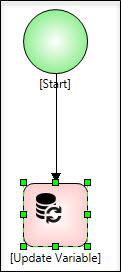
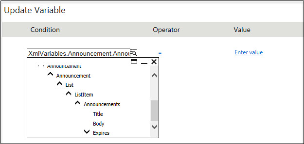
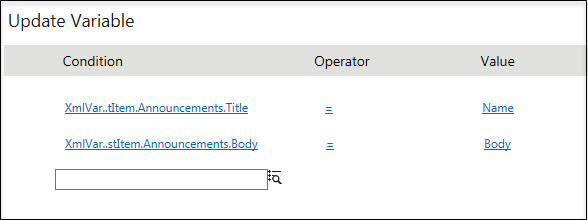

No

For example, to create a new item for announcements content type of a list or document library, select scope as New for that Xml Variable.
Creating a list item for a specific content type

Creating a List Item for default content type which is an Item

Note: You cannot update the fields under two content types at same time.